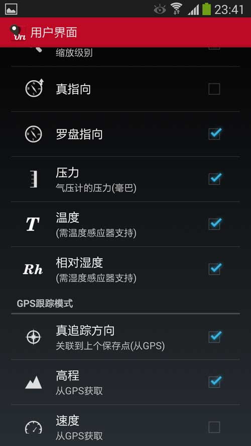
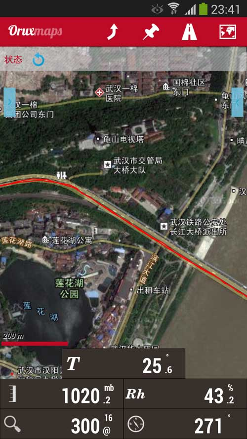

|
| 首页 | GeoTIFF | 今日花园Maps | OruxMaps | OZI | 资源 | 软件 | 联系 |
| 当前位置：OruxMaps ---> 在OruxMaps中显示温度、相对湿度、气压、罗盘等数据 |
在OruxMaps中显示温度、相对湿度、气压、罗盘等数据最近研究OruxMaps的使用方法，发现其还可以显示温度、相对湿度、气压、罗盘等数据。这些数据对户外活动还是很有用的。在OruxMaps的“设置”---->“用户界面”---->“仪表盘”---->“用户界面”中进行勾选，如下图所示： |

|
设置完后OruxMaps在地图下面的仪表盘上，就会显示显示温度、相对温度、气压、罗盘等数据，如下图所示： |

|
我用的是三星S4手机，要显示这些数据，手机硬件必须有相应的传感器才行。看来三星S4手机上这些传感器都有啊！ 不过由于温度传感器在手机内部，所以测出来的温度比实际空气温度要高些，其它的数据都是正确的。 |
| www.todaygarden.net |
版权所有 2010-2020 今日花园 |